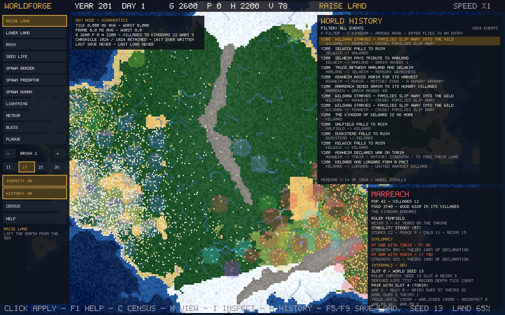

Project · Living-world sandbox
WorldForge
A living-world sandbox where geography shapes civilizations, civilizations shape history.
About
WorldForge generates a world — terrain, regions, resources — and then simulates the civilizations that rise inside it: settlements are founded, grow, expand, trade food with their neighbours, form kingdoms, and sometimes disappear. Everything is procedural and seeded: the same seed always grows the same world, and every world's history can be inspected and explained after the fact.
Working today — as built by shelving
- Procedural terrain generation whose landforms affect where civilizations can thrive
- Settlements that form, grow, expand, migrate, and vanish — houses are built and burned on the map, and a kingdom's territory follows its built footprint
- Kingdoms with named rulers: lifespans, succession, and a stability measure whose components a player can inspect
- Diplomacy: contact between neighbouring kingdoms, grievances, wars, raids, truces, alliances, and allies called to war
- Warfare with mustered levies and granary supply, declared war goals, tribute paid at truce, and occupation — kingdoms can conquer each other's villages outright
- An inspectable chronicle that records major events with their reasons, plus per-kingdom census and history panels
- Instability: a weak kingdom can lose a village to a rival crown when a ruler dies, or watch its best-fed village break away and found a kingdom of its own
- Save and load in four slots, including diplomacy and ruler state; fully seeded and reproducible
The road so far
Five milestones, each designed, built, and verified before the next began. Every one passed the full test suite on a fresh build before it was accepted. The full table — including the milestones that were planned and never started — is on the history page.
The game as it stands
Unretouched screenshots from development builds. What you see is the interface as it stood — panels, diagnostics and all.




What was planned — frozen, not promised
Recorded as it stood at shelving. None of this is in development:
- A simulation observatory for the development tools: why values hold, permanent history, causal investigation (Phase A built and merged; Phases B–E unbuilt — frozen at shelving)
- Living diplomacy: grievances that arise without a war, and alliances that form in ordinary play (designed; implementation never began — frozen at shelving)
- Inter-kingdom trade and caravans; then physical settlements — more building types, roads, and city walls (planned only)
- Seasons and climate that act on farming and survival; rivers with mechanical effects (planned only)
- A first-play build for hands-on evaluation (planned only)